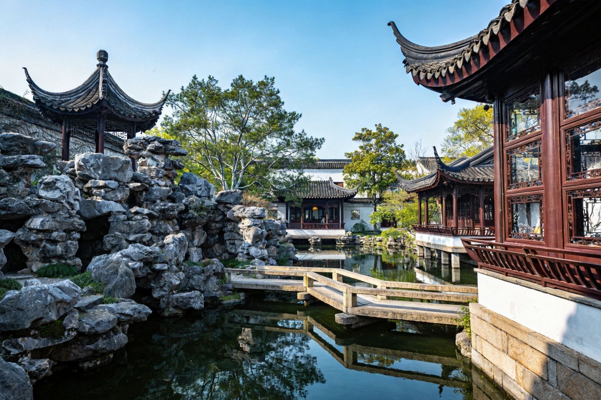
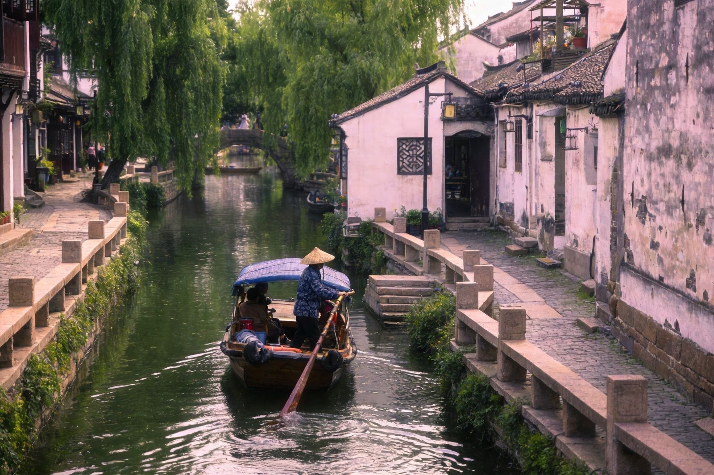
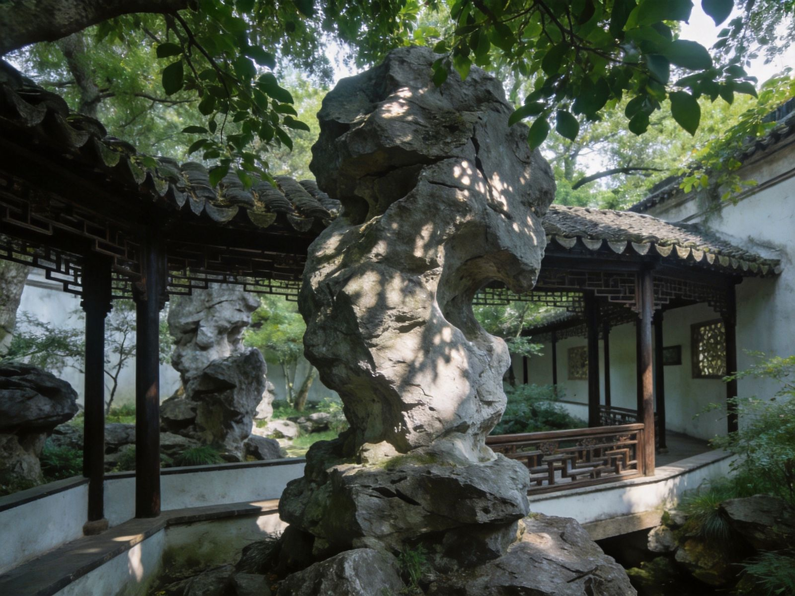
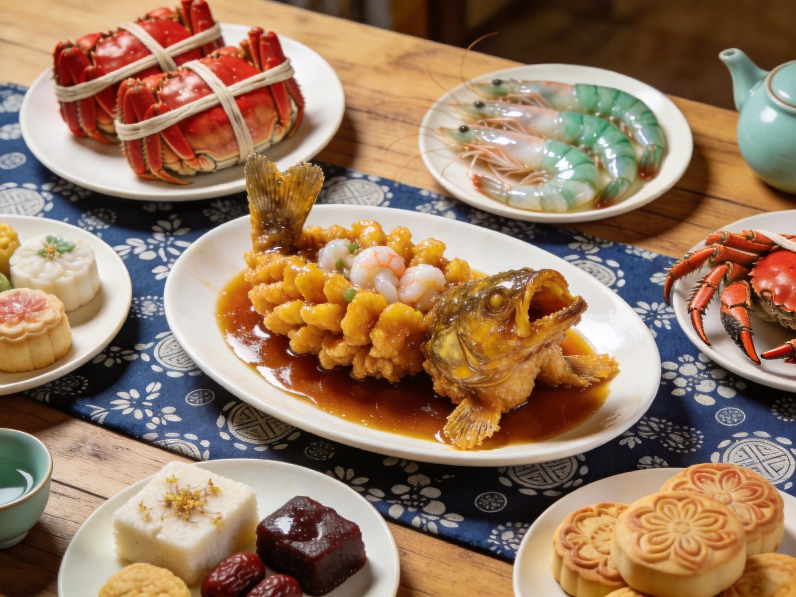

封面
总览
行前·交通·住
Day1
Day2
Day3
Day4
美食清单
组合·贴士
安全提示

园林之城 · SAMPLES OF JIANGNAN
苏州
拙政园 · 平江路 · 虎丘 · 旺山
拙政园
留园
虎丘
平江路
山塘街
周庄
江苏 · 苏州
A5 口袋手册
· 园林水乡
1
/ 10
苏州
动线总览
2 天怎么玩
Route Overview
Day1
上午
拙政园 · 苏州博物馆
园林与建筑艺术
Day1
下午
平江路 · 山塘街
小桥流水，粉墙黛瓦
Day2
上午
虎丘 · 剑池
吴中第一名胜
Day2
下午
周庄 / 同里
水乡古镇漫步
TIP
苏州是
园林之城
，拙政园、留园并称中国四大名园，一园一景看尽江南。
TIP
🎫 门票速查：拙政园约
80元
、留园约
55元
、虎丘约
70元
。以景区当日公示为准。
2
/ 10
苏州
行前准备
出发前，记住 3 件事
Before You Go
🚄 怎么去 · 住哪
高铁
：苏州站/苏州北站，地铁便利
飞机
：虹桥/浦东机场转高铁，或硕放机场
宿
平江路/观前街
，园林水乡近便，
首推
🎒 必带
园林
节假日拥挤，建议一早前往
拙政园、苏博
需预约
平江路、山塘街
免费
逛吃

苏州平江路水乡
3
/ 10
苏州
Day1 上午
Day1 上午
园林艺术 · 拙政
拙政园
→
苏州博物馆
→
狮子林
🌿 拙政园
中国四大名园
之一
借景、叠石、理水之典范
四季景致各异
🏛 苏州博物馆
贝聿铭设计，
现代与古典
园林式布局，光线极美
需提前
预约
拙政园 · 江南园林
TIP
拙政园、苏博、狮子林相邻，一上午可走完，园林爱好者首选。
4
/ 10
苏州
Day1 下午
Day1 下午
水乡街巷 · 平江
平江路
→
山塘街
→
观前街
🛶 平江路
小桥流水
，粉墙黛瓦
沿河漫步听评弹
老巷咖啡与小吃
🌉 山塘街
姑苏第一名街
夜幕灯火，运河两岸
七里山塘夜景佳
平江路 · 水巷
山塘街 · 灯火
TIP
平江路与山塘街水乡氛围浓郁，傍晚山塘街看灯火倒影最美。
5
/ 10
苏州
Day2 上午
Day2 上午
吴中名胜 · 虎丘
虎丘
→
剑池
→
留园
⛰ 虎丘
吴中第一名胜
虎丘塔千年斜塔
剑池传说与摩崖
虎丘 · 云岩寺塔

留园 · 奇石
TIP
虎丘与留园相距不远，登塔看剑池，游园品林泉，相得益彰。
6
/ 10
苏州
Day2 下午
Day2 下午
水乡古镇 · 周庄同里
周庄
→
同里
→
返苏
🏡 周庄
中国第一水乡
双桥、沈厅、张厅
摇橹船游河巷
🌾 同里
东方小威尼斯
退思园、三桥
较周庄清静
TIP
周庄商业化强、同里更清幽，时间有限选其一体验水乡生活。
7
/ 10
苏州
美食清单
苏帮味道 · 不时不食
Eat · Local
🦀
大闸蟹
阳澄湖蟹，秋季膏肥
🥟
生煎馒头
皮脆汁多，苏州早餐
🍚
松鼠桂鱼
刀工精细，酸甜开胃
🥣
糖粥/桂花糕
甜糯细腻，江南小点

苏帮味道
不时不食
TIP
观前街、平江路、太监弄美食云集，苏帮菜讲究鲜甜，时令最妙。
8
/ 10
苏州
组合玩法 · 出行贴士
怎么串成 一条线
Route & Tips
苏州经典线路：
🗓 1 天速玩
拙政园＋平江路＋虎丘
园林精华
🚄 交通
地铁便利，园林集中
城区易行
🗓 2 天加长
加苏博、留园、周庄水乡
更深入
TIP
苏州是园林与江南水乡的集大成者，漫步街巷，一步一景皆是诗意。
9
/ 10
苏州
安全提示
看清这些，玩得更安心
Stay Safe
👥
园林人潮
节假日拥挤，错峰早到更从容
🌧
江南多雨
带伞，雨后石路防滑
🦀
时令美食
蟹季注意人群与价格
🏡
古镇门票
周庄、同里单独购票
⚠️
紧急
拨110 / 120；旅游投诉拨12345
苏州「WorldStip」祝你玩得开心 🛶
10
/ 10
WorldStip · 苏州 / 拙政园 / 平江路 / 虎丘 / 周庄 / 园林 · 数据以景区当日公示为准
Insta360
记录美好
记录美好生活
相机指南 · CAMERA GUIDE